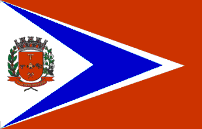

Progresso! Progresso!
Seja a nossa divisa.
Progresso! Progresso!
Seja a nossa divisa.
Porvir!
Das Indústrias no enorme Congresso.
Precisamos galhardos agir.
Precisamos galhardos agir.
Honra ao povo que sabe,
Os louros da glória colher.
E co a alma de luzes
Sedenta, sedenta a luz
Do trabalho vai colher!
Honra ao povo que sabe,
Os louros da glória, da glória colher.
Honra ao povo que sabe,
Os louros da glória colher
Ao povo... ao povo que sabe
Da glória os louros colher.
Progresso! Progresso!
Seja a nossa conquista: Porvir!
Progresso!